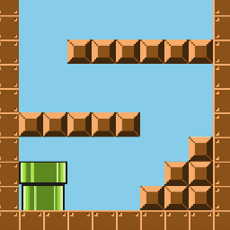

Table of contents
はじめに
ゲーム作りにおいてステージを作成する時、オブジェクトが少ない場合は１つ１つ位置を指定して追加していくこともできるでしょう。 でも、最終的には2次元配列でマップデータを作成して、プログラム内から読み込む方法などに落ち着くかと思います。

2次元配列のマップデータ
通常は、以下のようなデータを作成します。
// ステージデータ
var STAGE = ['4','0','0','0','0','0','0','0','0','0'],
['4','0','0','0','0','0','0','0','0','0'],
['4','0','0','0','0','0','0','0','0','0'],
['4','0','0','0','0','0','0','0','0','0'],
['4','0','0','0','0','0','0','0','0','0']];
- 配列ですので、それぞれの要素をシングルクオーテーションで囲む必要があり、データの修正などが結構面倒です。
マップデータを簡素化する
- 少し簡略化した以下の形式で読め込めるようにします。
- 1次元の配列になっており、コピーアンドペーストも楽です。
// ステージデータ
var STAGE = ['4000000000',
'4000000000',
'4000000000',
'4000000000',
'4000000000'];
マップデータ読み込み処理
- マップデータを読み込んでオブジェクトを配置する処理は、以下のとおりです。
// マップ作成
setStage: function(stage) {
var half = GRID_SIZE / 2;
var self = this;
// マップデータをループ
stage.each(function(arr, j) {
// 文字列を配列に変換
arr.toArray().each(function(id, i) {
var x = self.gx.span(i) + half;
var y = self.gx.span(j) + half;
// 空白以外の場合
if (id > 0) {
// タイルセットからスプライト作成
var elem = Sprite('tiles', GRID_SIZE, GRID_SIZE).addChildTo(self.objectGroup);
elem.setPosition(x, y);
// フレームインデックス指定
elem.frameIndex = id - 1;
return;
}
});
});
},
- 引数stageに与えられたマップデータに基づいてオブジェクトを配置します。
- 配列で与えられた文字列をtoArrayメソッドで配列に変換することで、処理する際に２次元配列にしています。
おわりに
マップデータを最初から２次元配列で持たず、処理時に２次元化することでマップデータ定義を見やすくするというちょっとしたテクニックですが、個人的には気に入っています。